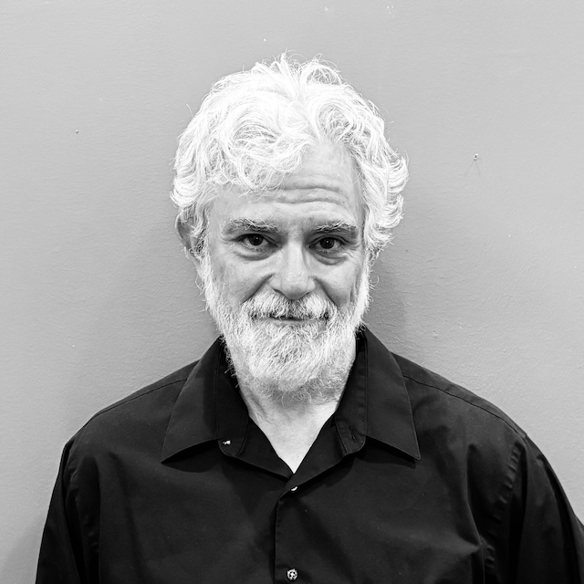
Actor
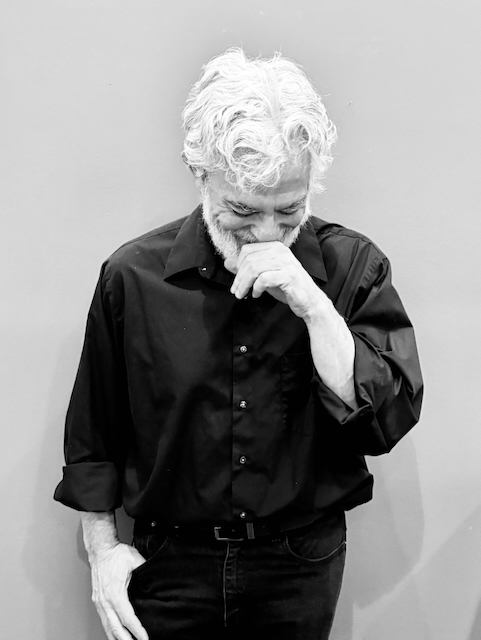
About
Bill Krauss has a broad background in the arts. Recent roles include Estragon in Waiting for Godot, Hercule Poirot in Murder on the Orient Express, Cornwall in King Lear, and Professor Moriarty in Sherlock Holmes. He's also been a director, improvisor, voice actor, photographer, sound engineer, and record producer. Serial-obsessive or attention-span-challenged? You decide.
He trained at the American Conservatory Theater, with Susan Peretz, Jean Shelton, Marlene Ryan, and the Groundlings Theatre, and holds a B.A. in Music from Antioch College.
Photos
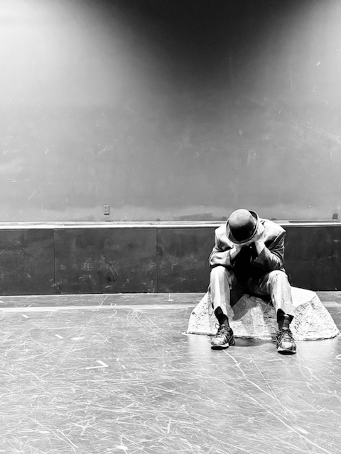
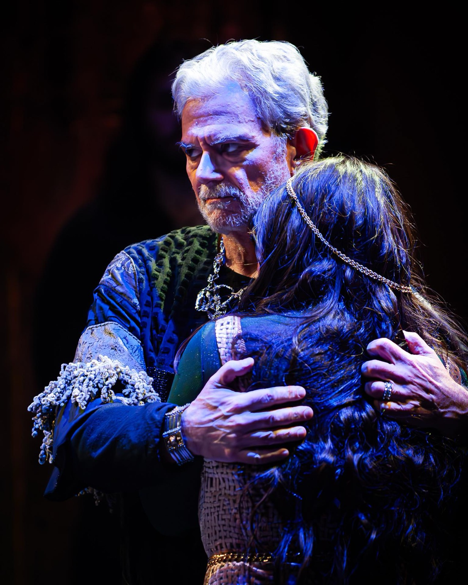
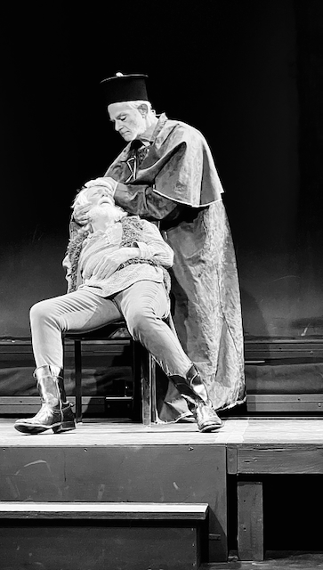
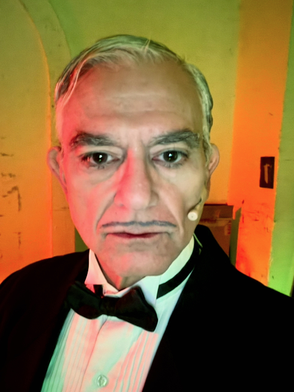
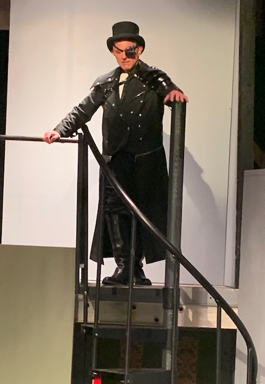
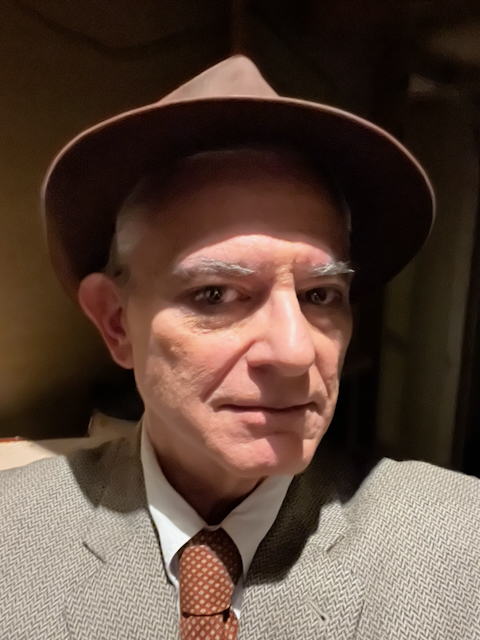
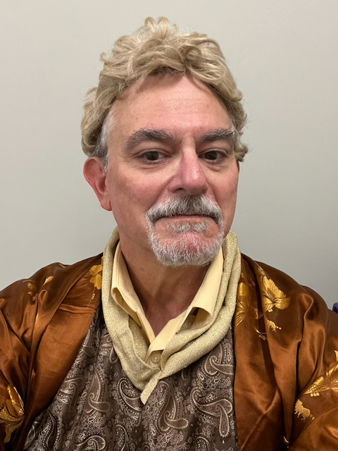
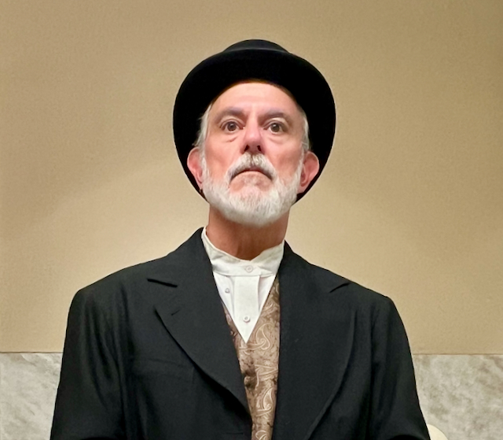
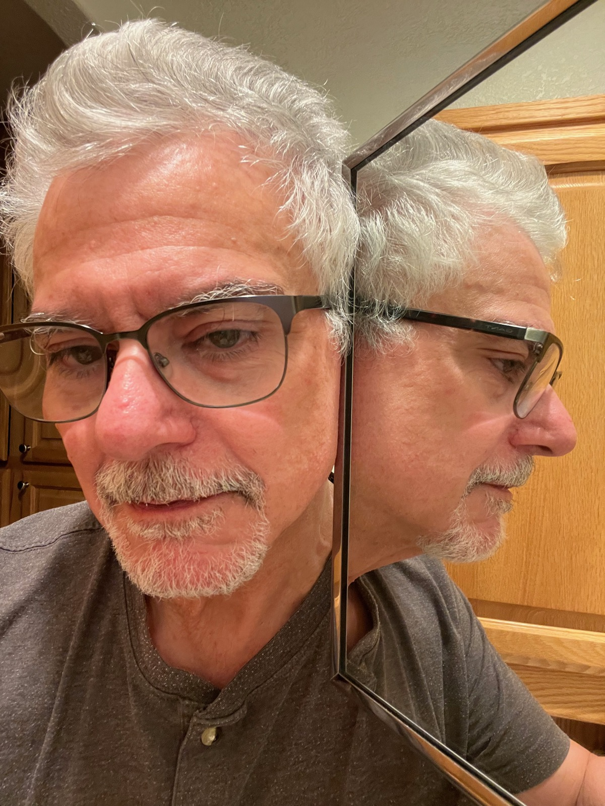
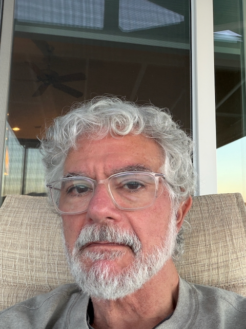
Résumé
| Waiting for Godot | Estragon | Cosmos Theatre, Dir. Julie Harrington |
| The Play that Goes Wrong | Perkins | The Hazeltine, Dir. Albert Hendeaux |
| Murder on the Orient Express | Hercule Poirot | The Hazeltine, Dir. Roger Tipping |
| King Lear | Cornwall | Cosmos Theatre, Dir. Julie Harrington |
| Fetterman Fettered | Raymond Fetterman | Additional Particulars, Dir. Albert Hendeaux |
| A Tale of Two Cousins | Governor Goodwin | Sharlot Hall Museum, Dir. Julie Harrington |
| Sherlock Holmes | Professor Moriarty | Prescott Center for the Arts, Dir. Layla Tenney |
| Arsenic and Old Lace | Lt. Rooney | Prescott Center for the Arts, Dir. Jim Pyduck |
| Picasso at the Lapin Agile | Sagot | Prescott Center for the Arts, Dir. Albert Hendeaux |
| The Sociable Plover | Dave | Prescott Center for the Arts, Dir. Jean Lippincott |
| Later Life | Other Men (5 chars.) | PCA Reader's Theatre, Dir. Candi Ford Snow |
| Luv | Harry Berlin | Sea Theatre Co., Dir. Jean Shelton |
| Questions of Mercy | David Hamilton | Theater Artists of Marin, Dir. V. Abascal |
| The Anti-Therapist | Roger | Yakety Yak Perf. Space, Dir. J. Laurel |
| Improv Anonymous | Company Member | Various |
| The Lavender Family Circus | Martin | S.F. Fringe Festival, Dir. Suzanne Pullen |
| Spring Awakening | Prof. Corona Radiata | Exit Theater, Dir. Floyd LaBar |
| Doghouse Court | Anthony | WILD 107.7/Guest Appearance |
| 59 Minute Cleaners Improv | Company Member | Blue Bear Theater |
| The Crucible | Gov. Danforth | Shelton Theatre, Dir. Jean Shelton |
| Alcatraz Avenue | Lead | Ind. Feature, Dir. Tom Edgar |
| Incidental Death | Lead | Short, Dir. Tom Martin |
| Yerba City | Supporting | Ind. Feature, Dir. Michael Gibson |
| The Education of a Vampire | Supporting | Ind. Feature, Dir. Jimmy Williams |
| Zoli's Brain | Supporting | Ind. Feature, Dir. Tiffany Shlain |
| Scrapper | Supporting | USC Grad Short, Dir. Mark Cancelliere |
| Round the Dial (Spec Pilot) | Various | Sketch Comedy, Dir. Paul Laudenslager |
| Lost in Dinosaur World | Supporting | Children's Program, Dir. Claudia Stern |
Contact
For bookings, auditions, or general inquiries, reach out directly.